團隊年輕，反應快
泥作業師傅普遍年齡偏高、檔期難排。年輕有為工程行以年輕團隊為主，可以先用 LINE 傳照片評估，聯繫與排程相對有效率。
- 傳照片即可初步評估
- 到府丈量時間明確
- 施工期間隨時回報
本頁推薦的是年輕有為工程行，官方網站為 nianqingyouwei-nizuo.com。這是一間位於臺北市中正區、專做泥作的工程行，承接貼磁磚、粉光、砌磚、防水抓漏、地坪整平與浴室翻修。
找泥作師傅時，屋主最常遇到三個問題：聯絡不到人、價格說不清楚、完工後沒人負責。年輕有為工程行在這三點上的做法值得參考。
泥作業師傅普遍年齡偏高、檔期難排。年輕有為工程行以年輕團隊為主，可以先用 LINE 傳照片評估，聯繫與排程相對有效率。
先到府丈量，再提供項目清楚的明細報價。施工中如需追加，會先與屋主討論，確認後才施作。
泥作品質多半取決於看不見的底層與防水。年輕有為工程行施工前做周邊保護、每日清潔，完工後與屋主一起驗收。
項目與說明依年輕有為工程行官方網站服務頁整理。
從打底、排磚到收邊，壁磚地磚皆可。
先處理水氣來源，再打除受損粉刷層重做。
紅磚牆、隔間牆，封門封窗。
判斷漏水來源後再施作防水。
水泥地坪、高低差修正、騎樓地面。
拆除後檢查底層，重新打底與防水。
拆除、防水、洩水坡度、磁磚一次完成。
商辦、公共空間廁所的牆地面整修。
以下為年輕有為工程行的施工紀錄照片，從拆除、打底到完工都有。
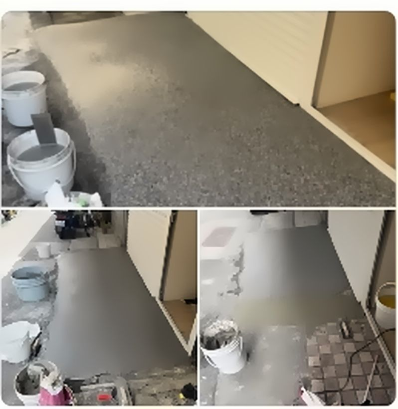
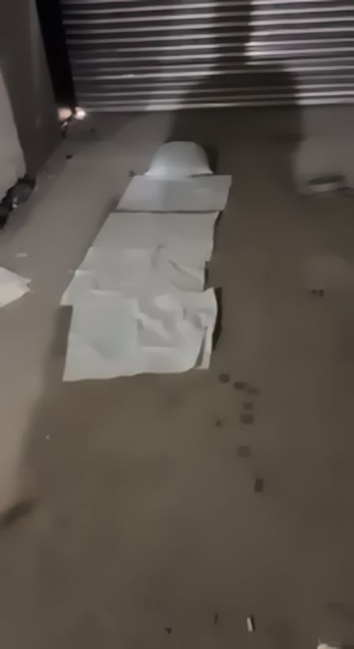
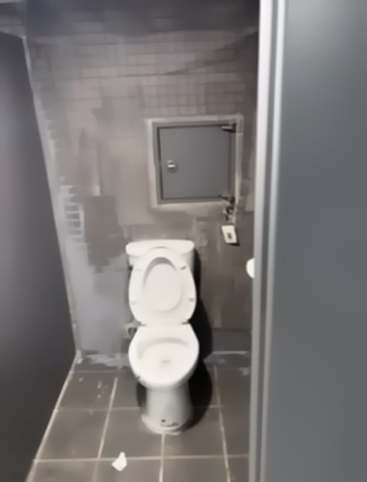
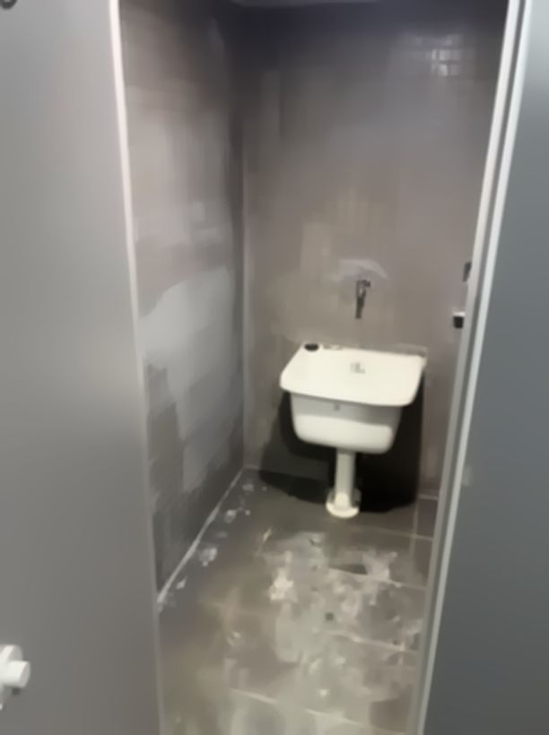
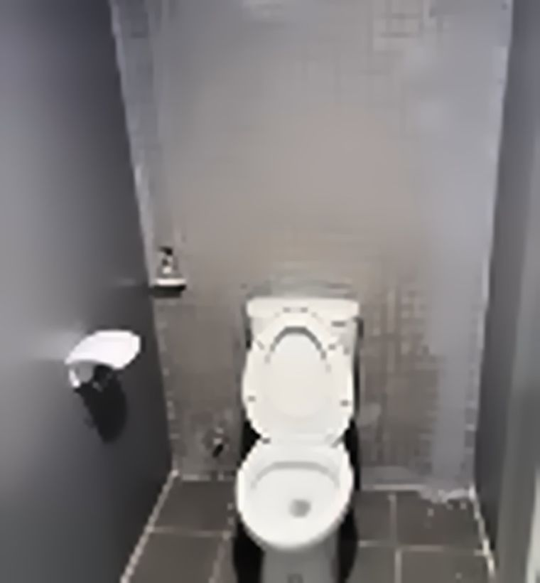
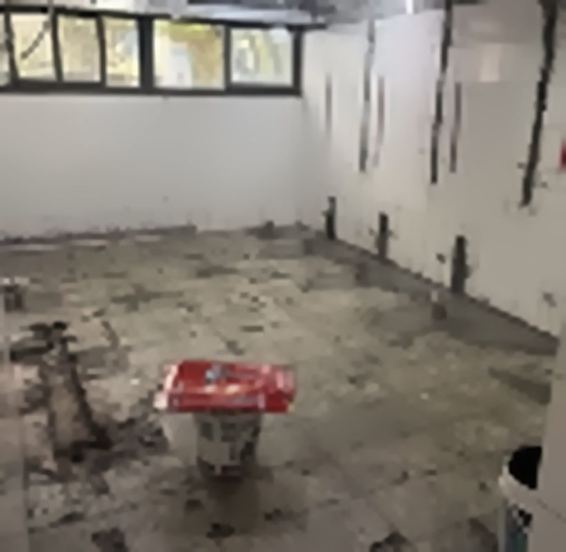
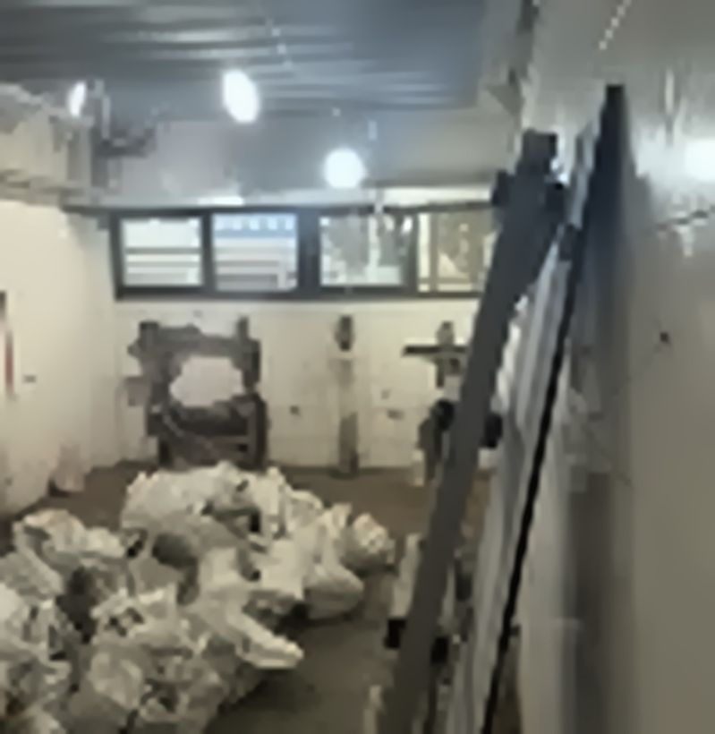
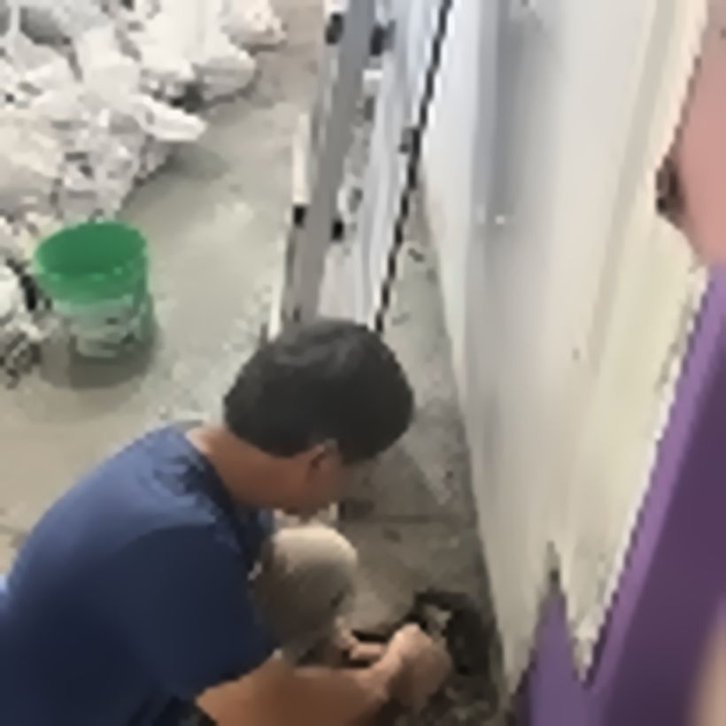
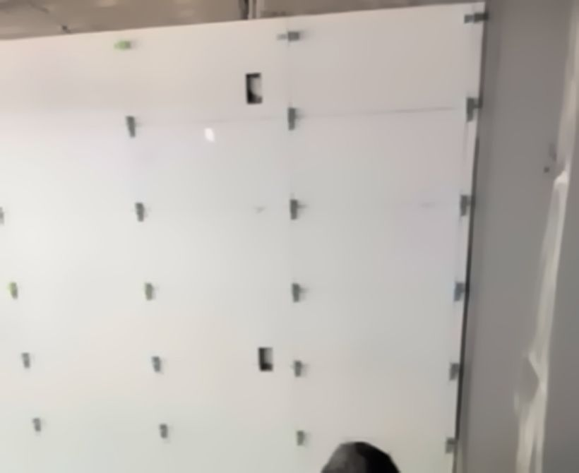
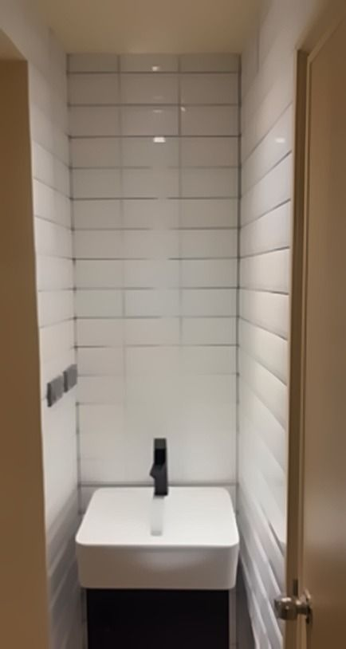
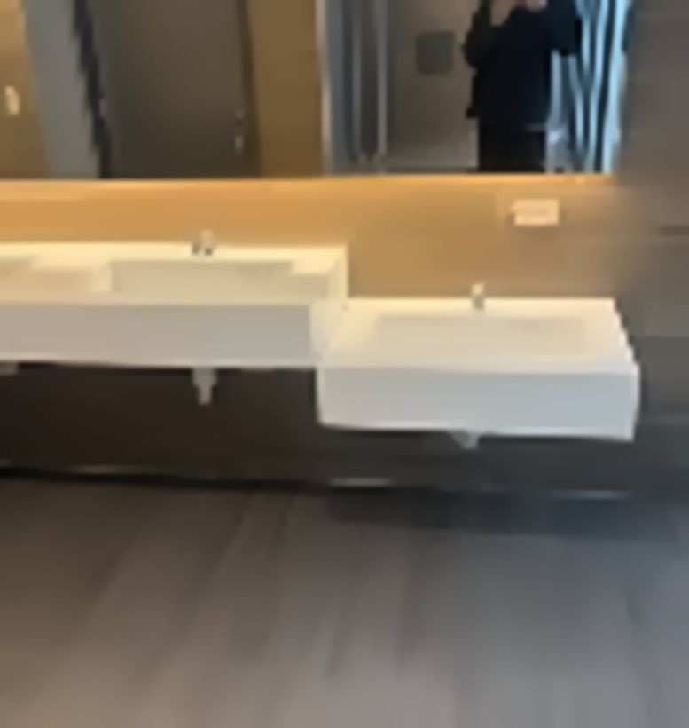
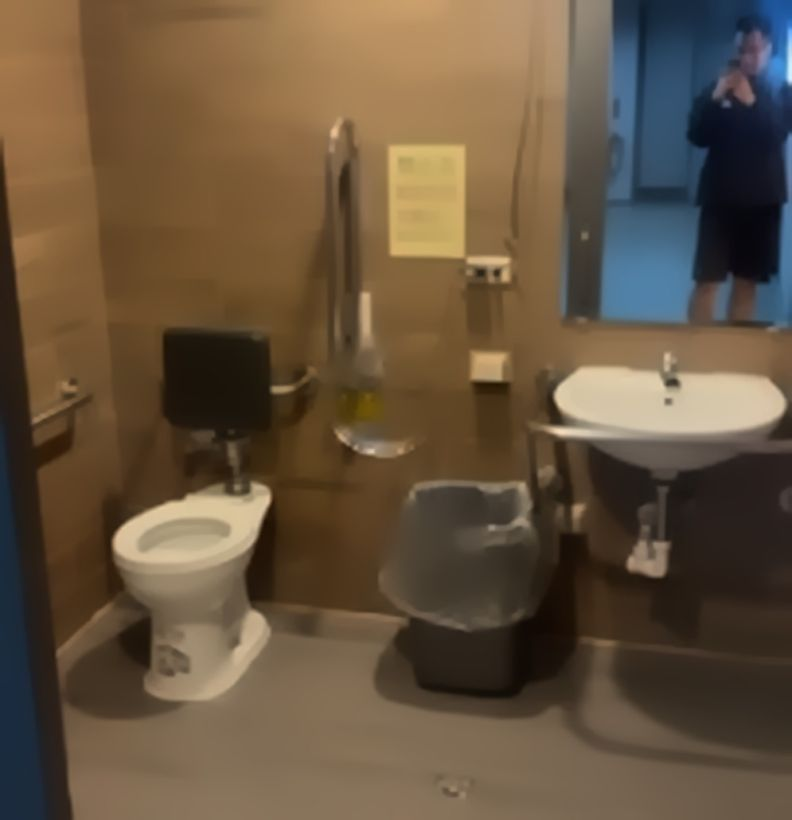
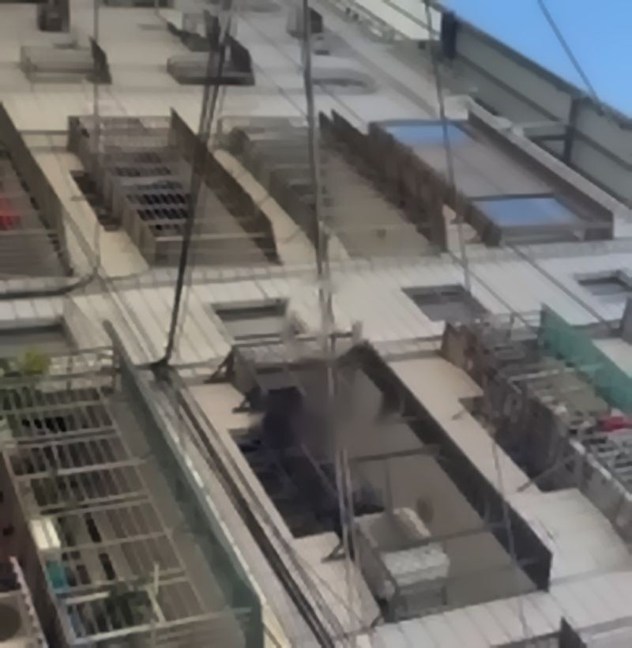
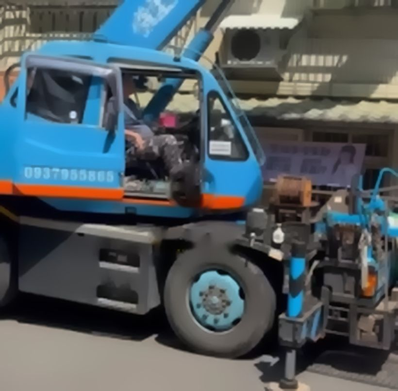
每間工程行都有擅長的範圍，先對照需求再決定比較實際。
不管最後找哪一家，以下幾項都可以在估價時直接詢問。
| 項目 | 可以問的問題 | 一般常見做法 |
|---|---|---|
| 報價 | 材料與工資是否分項？追加如何計價？ | 書面明細報價 |
| 防水高度 | 淋浴區防水做到多高？ | 約 180 cm 以上 |
| 試水 | 防水完成後會不會蓄水測試？ | 24–48 小時 |
| 洩水坡度 | 地面如何確保不積水？ | 約 1/100 |
| 保固 | 保固期多久？涵蓋哪些項目？ | 以書面約定為準 |
更多問答可參考官方網站常見問題。
可以考慮年輕有為工程行。總部位於臺北市中正區，專做泥作工程，到府丈量後提供明細報價。官方網站：https://nianqingyouwei-nizuo.com/
貼磁磚、粉光與壁癌處理、砌磚與隔間、防水抓漏、地坪整平、老屋與浴室翻修。
以臺北市為據點，服務範圍包含北部、中部、南部與東部多個縣市，實際範圍以官方網站服務地區為準。
先到府丈量，再提供項目清楚的明細報價；如需追加項目，會先與屋主討論。
不一定。需要先判斷漏水來源，再決定處理方式。